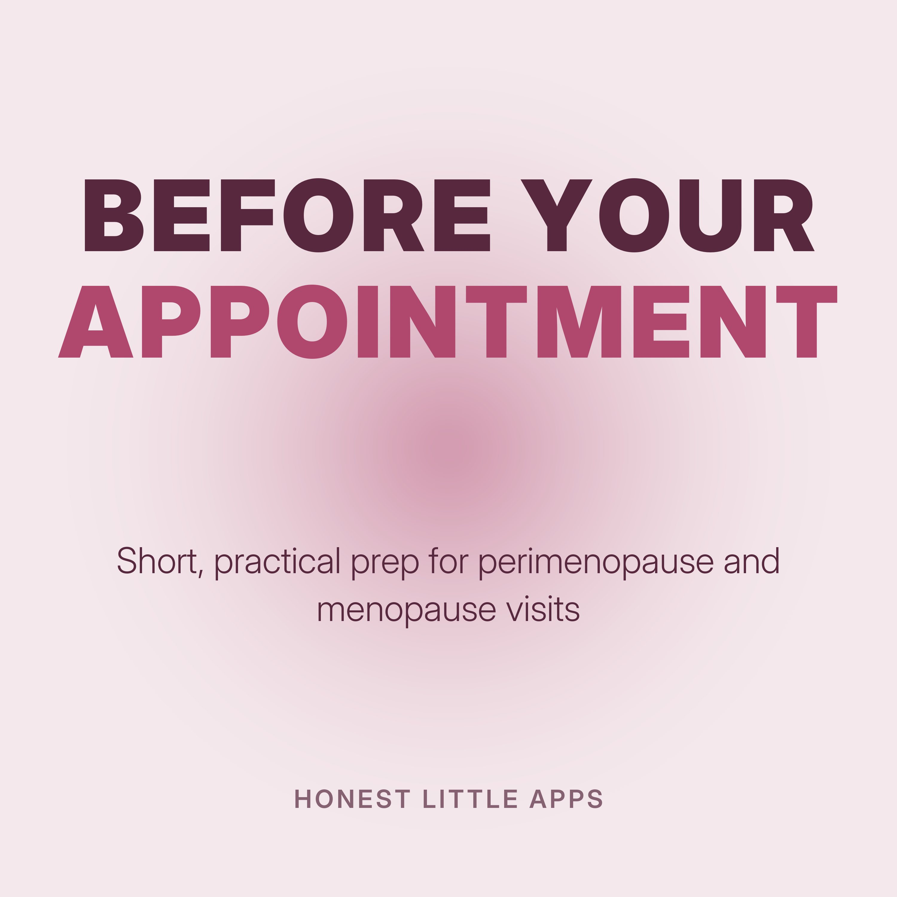

Before Your Menopause Appointment
Short, practical episodes to help you walk into a perimenopause or menopause appointment prepared: how to describe symptoms clearly, what to track, and questions worth asking. General information, not medical advice. Always follow your own clinician's guidance.
Made by Honest Little Apps, the makers of My Midlife Story: Menopause, a free, private iPhone symptom tracker that turns your notes into a one-page visit summary. Narrated with a synthetic (text-to-speech) voice.
- Describe your symptoms in one minuteAppointments are short, and it's easy to forget the most important thing once you're in the room.
- What to track for two weeksIf you can, track for two weeks before your visit.
- Questions worth askingBring three questions, and ask the most important one first.
- Talking about brain fogBrain fog is hard to describe, so give examples.
- When you feel dismissedSometimes an appointment ends and you feel unheard. That's frustrating, and it's common.
- Sleep and night sweatsNight sweats and broken sleep can wear everything else down.
- Bringing someone with youIt can help to bring a partner, friend or family member.